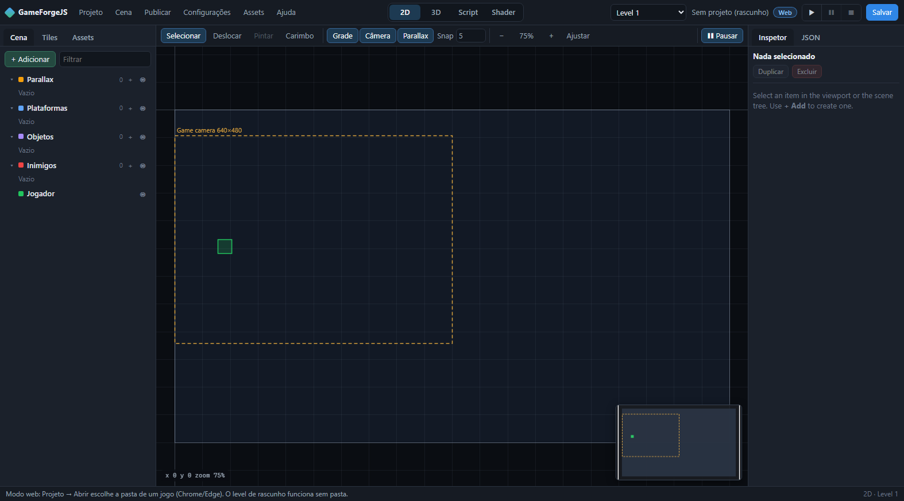

Views
2D and 3D
Edit scenes using project trees, viewports, scene data, and inspectors.
GameForgeJS tools
A Tauri desktop and browser editor for GameForgeJS projects, with 2D and 3D scene editing, script and shader views, and an in-editor Play workflow.

Current project scope
The Editor is available as a Tauri desktop application and in browser mode. It includes 2D and 3D scene views, script and shader tools, a Project Hub, and a Play workflow; this page does not imply support for every platform or project state.
Views
Edit scenes using project trees, viewports, scene data, and inspectors.
Code
The Editor includes a script view with GameForgeJS declarations and a GLSL shader workflow.
Play
Run a game's entry page in an in-editor panel.